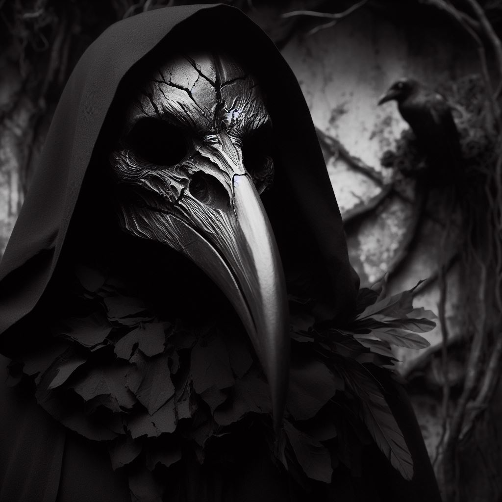
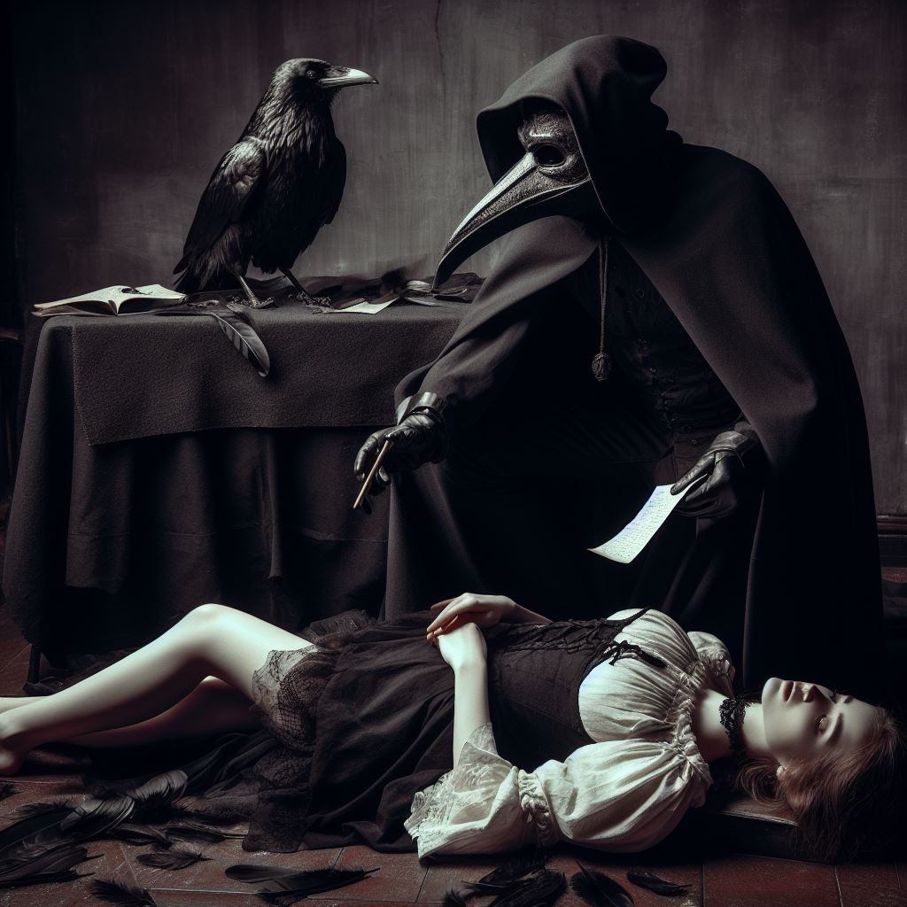
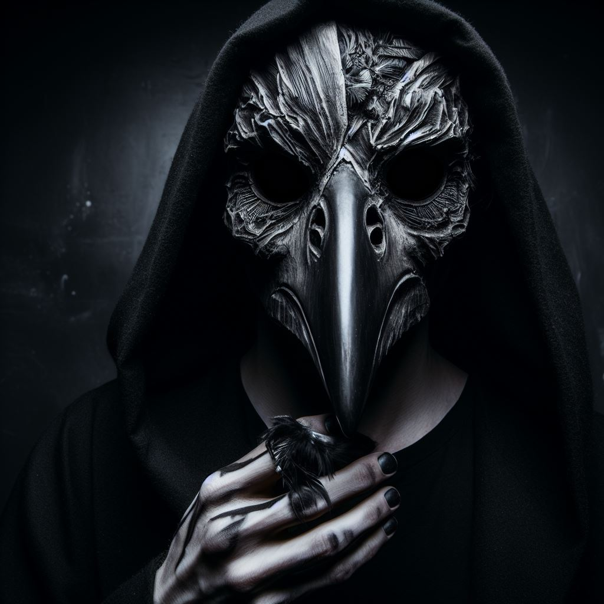

The Auditor of Shadows
In a forgotten hamlet, nestled deep within the shadowed abyss of looming mountains, there is a dread tale, hushed in the whispered tones of those cursed to remember: an unspeakable legend, shrouded in darkness, concerning the Auditor of Shadows.
The Auditor, a man whose true name was forever obscured by the gales of time, descended upon the accursed village one fateful winter's eve. An emaciated figure, he bore hollow eyes that mirrored the chasms of eternity itself. His raiment, as black as the starless void, seemed to engulf the very light of the world. The presence of the Auditor sent quivers of terror through the hearts of the villagers, for they understood that he materialized only when malevolence festered within.
Taking residence within a derelict edifice on the outskirts of the town, at first the Auditor silently observed the townsfolk with eyes that pierced the very depths of their souls, sending shudders coursing through all who encountered his gaze. The murmurs told of his eerie power, the capacity to uncover the darkest secrets, hidden deep within the labyrinthine chambers of the human heart.
The village itself stood as a macabre relic of a bygone era. Crumbling facades of once-grand buildings loomed like silent sentinels of despair, twisted, gnarled trees reached out with skeletal fingers, and a perpetual shroud of gray hung over the endless, snow-covered peaks of the surrounding mountains.
Then, individually, he summoned the residents, forcing them to confront their most dreadful transgressions in his foreboding abode. They entered trembling, their souls rent asunder, emerging with pallid countenances, their eyes devoid of hope. None spoke of what occurred within those grim meetings, but the town's air grew ever thicker with dread.
It seemed that the very architecture started to resonate with the town's dark secrets. The old building that housed the Auditor's office began to creak ominously, its timeworn wood groaning with the weight of hidden horrors. Inside, the air was suffused with the scent of ancient, decaying parchment, and the faint, almost hypnotic flicker of the candlelight cast dancing shadows upon the walls.
Swiftly, a pall of unnatural occurrences descended upon the village. Shadows danced upon the walls in grotesque revelry, ghostly voices resonated through the deserted streets, and cryptic symbols, etched in crimson and black, materialized upon the wintry canvas. Paranoia festered among the townsfolk as dark secrets were exposed, tearing the once-tight-knit community asunder.
The symbolism of the cryptic symbols, drawn in dark crimson and ebony, seemed to mirror the malevolence festering within the town itself, as if the very streets were haunted by the Auditor's presence.
The Auditor's presence proved inescapable, his audits relentless. The town, once a haven of amity, crumbled beneath the weight of fear and mistrust. Inhabitants locked themselves indoors after twilight, yet even the very night seemed to conspire against them as they were compelled, one by one, to attend to account for themselves.
On one tempestuous night, a desperate woman, burdened by the gravest of sins, came to the Auditor's dark abode. She carried with her a secret of familial betrayal, a treachery that gnawed at her soul. She crossed the threshold, her heart quaking, and the door slammed shut behind her.
Hours passed, the storm outside raged, and the woman did not reemerge. Come the dawn, the townsfolk, driven by trepidation, converged upon the ominous building, but they dared not trespass. Their ears, however, were met suddenly by a blood-curdling scream, then a haunting, echoing silence.
As the sun ascended and the storm retreated, the townsfolk entered the grim office. There sat the Auditor, his eyes hollower than ever, and they saw the motionless form of the woman upon the floor, her face frozen in a final anguish. Clutched in her lifeless hand, they found a note in the Auditor’s now familiar scrawl, which declared this chilling message: "The darkest audits demand the darkest recompense."
His work complete, and with a heavy, eerie silence, the Auditor rose slowly from his seat, his gaunt form casting a lingering shadow upon the room. He walked with a deliberate, almost otherworldly gait to the office's exit. The townsfolk watched in dread as he passed through the door and made his way to the outskirts of the village. There, on the precipice of the town, he faded into the gathering mist, vanishing into the eternal enigma of the mountain's shrouded embrace.
Nonetheless, even today, the forsaken mountain hamlet remains shrouded in dread and despair, for the legend of the Auditor of Shadows persists. Those who dare tread upon the accursed grounds speak of unsettling encounters and an oppressive aura that hangs heavily over the village, leaving them with the disquieting belief that the Auditor may return again this year to conduct another audit.
